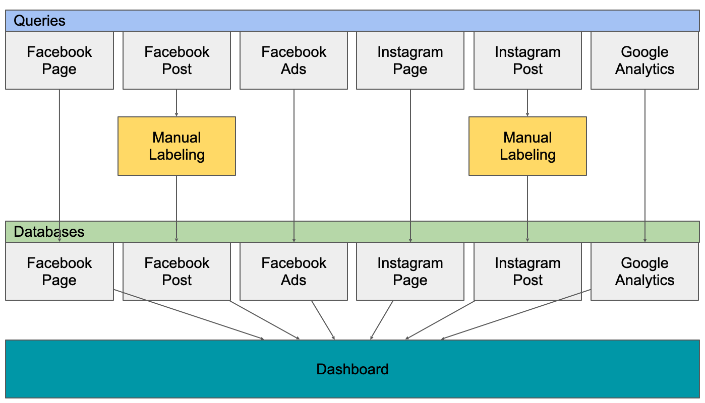
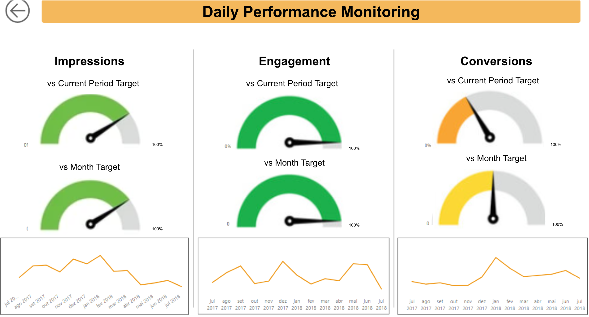
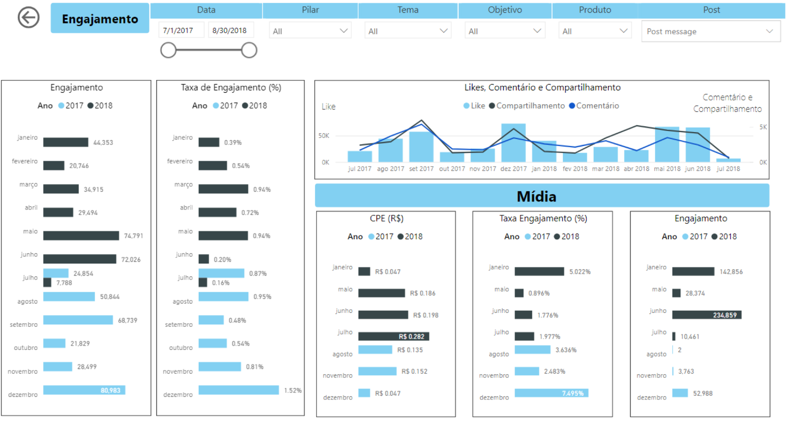

Dashboards
Looker Studio
I created this dashboard to analyze App Promotion Campaigns.
I wanted to be able to identify problems and opportunities in every step of the funnel, so the pages were created as:
Funnel Metrics- where you can see the events, the conversions rates for each event and the price.Funnel Metrics by Week- where you can add the time dimension to the funnel metrics.Cost Variation and Run Rate- where you can see the cost variation (week over week) and the run rate (cost vs planned budget).
The design/logic for each page is:
-
Home Page centralizing the pages and helping the navigation
-
Pages
- Title and
Back Homebutton to help navigation. - Filter for dimensions at the top (with a button to remove filters).
- Scorecards with the main metrics for an overview.
- Groups of Metrics, grouped by selected dimension - advertiser, campaign name, etc. This works with an input from the user (parameter)
- Title and
note: It doesn't look so polished because I did this dashboard quite fast.
note2: I know there are some data quality issues in the csv's feeding the data, but please ignore it for now.
PowerBI
PowerBI
The dashboard was created to monitor performance of facebook and instagram pages, both organic and paid marketing. There are many tabs in the dashboard, but they are not displayed here. The dashboard was built in 2018.
I created the Extraction, Transformation, Loading and Visualization process from end to end.
Data Structure

Daily Performance comparing current result to the month target and to the adjusted month target (proportional run rate):
Example

Metrics over time with filters:
Example

Tableau
Unfortunately I don't have any image available to display right now.
I worked 2 years using Tableau, and everything you saw on the PowerBI and Looker Studio sections I know how to do it Tableau, for example:
- Connect to different data sources;
- Prepare and clean the data;
- Create visualizations with dimensions and measures, filters, groups, etc;
- Use calculations, functions, Level of Detail Expressions and Parameters;
- Create good dashboards using UX best practices.